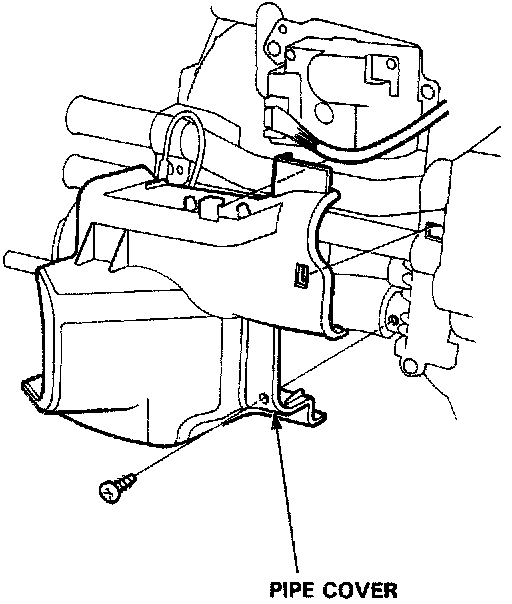
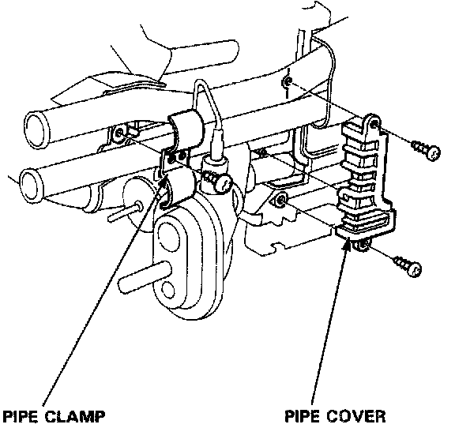
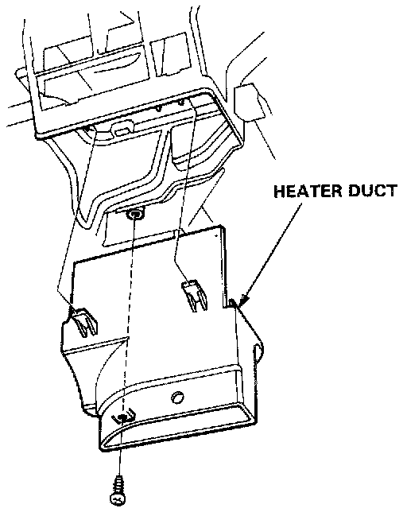
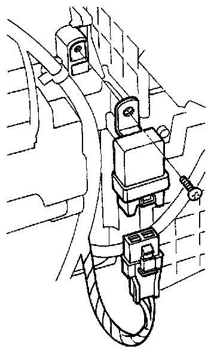
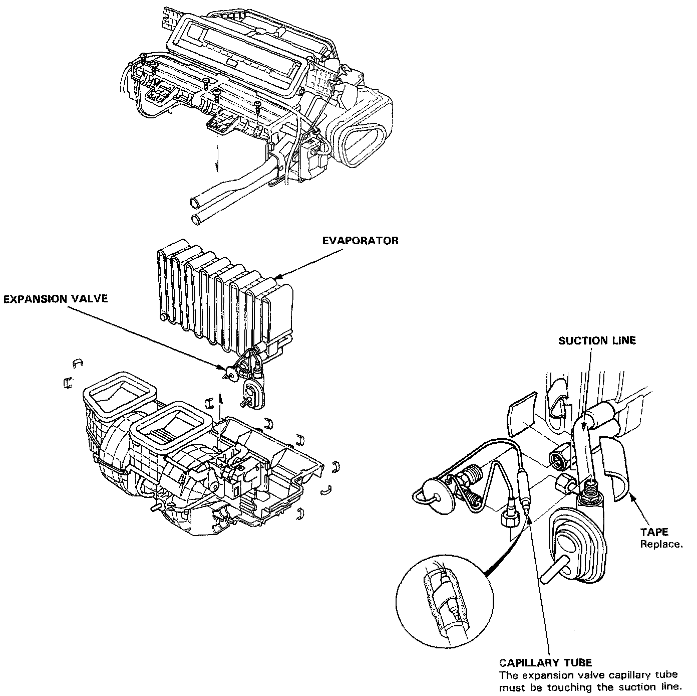

Evaporator Core: Service and Repair
EVAPORATOR REPLACEMENT1. Remove the heater-evaporator assembly. Refer to Evaporator Case.
Evaporator Case

2. Remove the mounting screw, then remove the pipe cover.

3. Remove the mounting screws, then remove the pipe clamp and pipe cover.

4. Remove the mounting screw, then remove the left side heater duct.

5. Remove the blower motor HIGH relay and disconned the 3P connector from power transistor.
6. Remove the self-tapping screws and clips, then carefully separate the healer-evaporator housings and remove the evaporator core.
7. Remove the expansion valve if necessary.

8. Assemble the heater-evaporator unit the reverse order of disassembly. Hold the expansion valve capillary tube down against the suction line, and wrap tape hold it there.